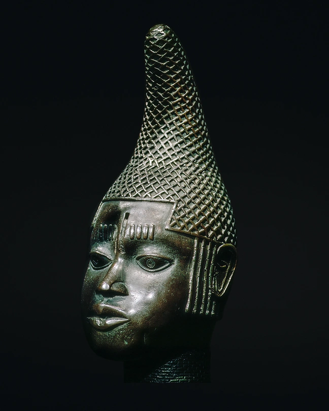

Bronze Head of an Ife Ruler
This royal portrait head shows the refined metal-casting tradition of Ile-Ife in south-west Nigeria. The detailed crown and facial markings reflect status, spirituality and artistry in Yoruba court life.